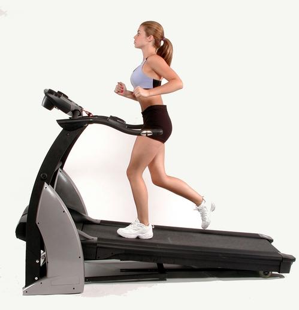
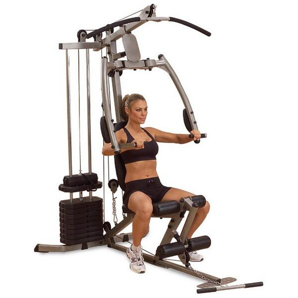
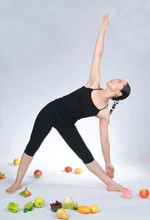

Exercitiile aerobe

Efortul aerob este acel efort care se desfasoara folosind oxigen din afara organismului. Antrenamentul este de durata lunga, iar oboseala de dupa nu este una profunda.
Prin exercitiile aerobice se oxigeneaza celulelor din zonele periferice si imbunatateste sistemul cardiovascular.
Tipuri de efort aerob: aerobic, spinning, alergatul pe banda, orice sport care mareste si mentine pulsul cardiac peste o anumita valoare.
|
Exercitiile anaerobe

Exerciţiul de tip anaerob nu foloseste oxigenul drept combustibil, ci glucoza prezenta sub forma de depzite de glicogen in muschi
si ficat. Antrenamentul anaerob implica in general ridicarea de greutati, testarea rezistentei si intervale de intensitate ridicata.
Aceste exercitii sunt destinate sa creasca masa musculara, prin alungirea si scurtarea fibrelor. Antrenamentul este de durata scurta,
iar oboseala de dupa este una intensa.
|
Stretching

Stretchingul se realizeaza dupa o prealabila incalzire a intregii musculaturi. Acesta creste treptat tonusul muscular, alungeste si intareste fibrele musculare si tendoanele. Imbunatatirea flexibilitatii si mobilitatii fac miscarea mai libera,
previne durerea secundara unor afectiuni reumatismale degenerative. Stretchingul este recomandat pentru persoanele predispuse
sa dezvolte rupturi musculare, intinderi musculare sau tendinite.
|